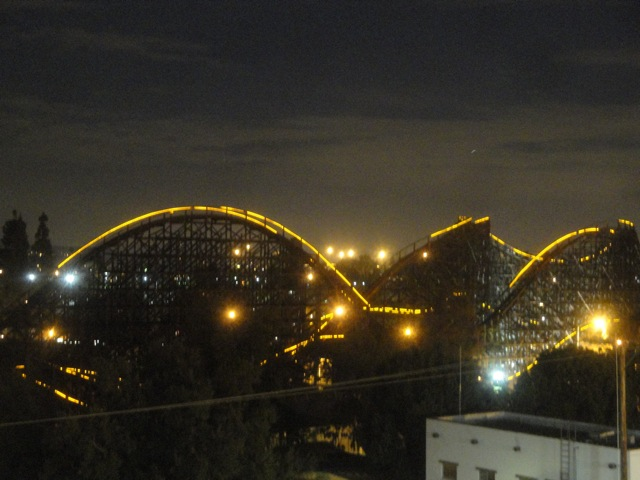
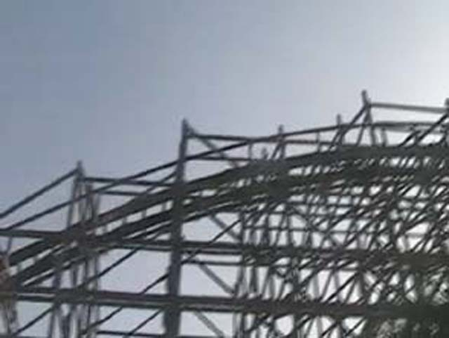

| |
Ghostrider Review

We're here at Knotts Berry Farm. Today we're going to review Ghostrider. You know that big wooden coaster that goes over the street, yeah. That's the one. Anyways, we head to the very last car on Ghostrider and pull your orange lap bar and buckle your seatbelt and we're off. Now Ghostrider has a little bit of pre-lift fun by starting with a drop out of the station. Now granted, it's nothing special. But hey, it's decent for a prelift. Much better than those simple dips found on most B&M coasters. You get a little bit of a shuffle during this part of the ride. This gets us a little worried about how the rest of the ride will be. But for now, this is nothing. Anyways, after that little bit of pre-lift fun, we head up into the lifthill. While climbing the lifthill, you get a really good view. To our right, we get a great view of the rest of Knotts Berry Farm. To our left, we get a good view of Soak City and the rest of the street. And all around us, we get a great view of the big wooden mess that we're about to go through. After climbing the lifthill, you reach the drop. Before even cresting you get slammed into the lap bar and thrown over the edge. This crazy airtime is great and you pick up some great speed. And now thanks to the new trackwork by GCI, there's no more jackhammering at the bottom, so now its even better. =) After that, you rise up into the second hill. You get some nice floater air on this hill before diving back down. Then you go up into the 3rd Hill. Then there's a turnaround with some nice lateral Gs. You can also get a good view of Knotts Berry Farm from there. But don't enjoy it for too long because you're thrown down into the 3rd drop. You get some nice airtime. WEE!!!! We then fly through a big turn that slams us to the side and provides us with some insane lateral Gs. After that madness, we then drop down before rising up over the station for a break. You also get a nice view of Knotts. We roll through some straight track and...BAM!!! We FLY over the drop and get some GREAT ejector air. I love this portion of the ride. Easily my favorite part of the ride. And now we get to go crazy during the 2nd half of the ride. This leads us into two airtime hill that also turn. So during this point of the ride, you get airtime and laterals at the same time. A very interesting combination. We then rise up into another turnaround. This provides us with some more good laterals. And to make it cooler, it's all completely covered by the structure from the first turnaround. So yeah. Cool. We then dip back down and get some more airtime. You then rise up into a bunny hop where you get some more airtime. Then you rise up and get some more airtime, but then, you finish the ride strong with a powerful helix as it drags you into the side. And then, it's over. While I never was one to complain about roughness on Ghostrider, it's much smoother now. I mean, it used to have some jackhammering, but now, it's smooth as glass. Not a jolt on the ride since GCI retracked the ride. And those Millenium Flyers run REALLY well on the ride. I'd totally recommend this ride for people going to Knotts. It's a really great wooden coaster for you to check out.
8/10
Location: Knotts Berry Farm
Opened: 1998
Built by: Custom Coasters
Last Ridden: September 26, 2021
Ghostrider Photos







Home
|